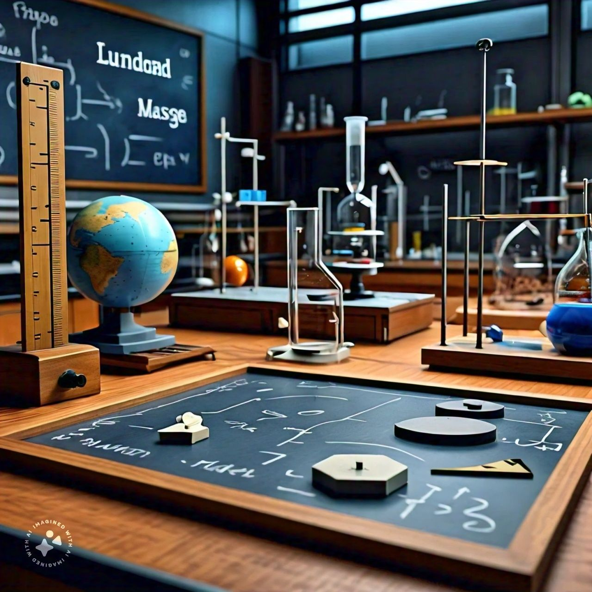

Fundamental and Derived Quantities
What are Fundamental Quantities?
Fundamental physical quantities serve as the foundational measurable quantities in physics, from which all other quantities
can be derived. These independent quantities form the basis of the SI (International System of Units) measurement system.
In the SI system, there are seven fundamental physical quantities:
- Length (meter, m): The distance between two points in space.
- Mass (kilogram, kg): The amount of matter in an object.
- Time (second, s): The duration of an event.
- Electric current (ampere, A): The flow of electric charge.
- Thermodynamic temperature (Kelvin, K): The measure of the thermal energy of a system.
- Amount of substance (mole, mol): The number of entities (such as atoms, molecules) in a sample.
- Luminous intensity (candela, cd): The measure of the perceived power of light.
These fundamental quantities are utilized to define derived quantities, which are expressed as algebraic combinations of
the fundamental quantities. For example, velocity is a derived quantity expressed as length divided by time (m/s).
Derived Quantities:
Derived quantities in physics are physical quantities that are obtained from the seven fundamental quantities through mathematical
relationships. In the International System of Units (SI), these derived quantities are expressed using combinations of the fundamental units.
Below are some examples of derived quantities along with their corresponding SI units and the fundamental quantities they are derived from:
e.g;
Velocity (meter per second, m/s)
This was derived from length (meter, m) and time (second, s).
Formula: Velocity = length⁄time = m⁄s
Acceleration (meter per second squared, m⁄s2 )
this was derived from length (meter, m) and time (second, s).
Formula: Acceleration = Velocity ⁄Time = length ⁄time2 = m ⁄s2
Force (Newton, N)
This was derived from mass (kilogram, kg), length (meter, m), and time (second, s).
Formula: Force = Mass × Acceleration = kg•m⁄s2
Pressure (pascal, Pa)
This was derived from force (newton, N) and area (square meter, m²).
Formula: Pressure = Force ⁄ Area = N ⁄m2
Energy (joule, J)
Derived from force (newton, N) and distance (meter, m).
Formula: Energy = Force × Distance = N⋅m
Power (watt, W)
Derived from energy (joule, J) and time (second, s).
Formula: Power = Energy⁄Time = J ⁄s
Electric charge (coulomb, C)
Derived from electric current (ampere, A) and time (second, s).
Formula: Electric charge = Current × Time = A⋅s
Voltage (volt, V)
Derived from power (watt, W) and electric current (ampere, A).
Formula: Voltage = Power⁄Current = W⁄A
These derived quantities are widely used in physics and engineering to characterize and analyze physical phenomena.
Velocity
Velocity is the rate of change of an object's position with respect to time. It is a measure of an object's speed in a specific direction.
Here are some key points to know about velocity:
- Velocity is a vector quantity, meaning it has both magnitude (amount of movement) and direction.
- It is measured in units of distance per unit time, such as meters per second (m/s).
- Velocity can be calculated using the formula: velocity = displacement ⁄time
- Velocity can be positive (moving in the direction of motion) or negative (moving in the opposite direction of motion).
- Velocity can change over time due to factors such as acceleration or deceleration.
Scenario 1 to solve velocity
Example 1:
Problem: A car travels 150 meters in 15 seconds. What is its velocity?
Steps:
- Identify the given values: Distance (d) = 150 meters, Time (t) = 15 seconds.
- Use the velocity formula: 𝑣 = 𝑑/𝑡
- Calculate the velocity: 𝑣 =150m⁄15s
Example 2:
Problem: A runner covers 400 meters in 50 seconds. What is his velocity?
Steps:
- Identify the given values: Distance (d) = 400 meters, Time (t) = 50 seconds.
- Use the velocity formula: 𝑣 =𝑑/𝑡
- Calculate the velocity: 𝑣 = 400m⁄50s
Now, do these to test your ability:
Question:
- A cyclist rides 120 meters in 30 seconds. What is her velocity?
- A train travels 500 meters in 25 seconds. What is its velocity?
- A boat moves 200 meters in 40 seconds. What is its Velocity?